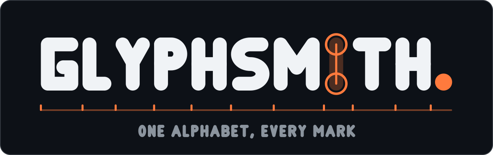
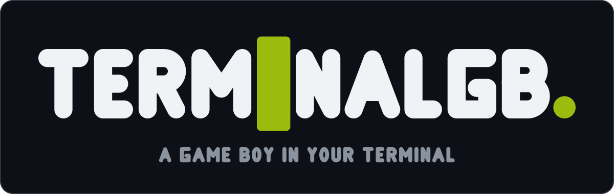
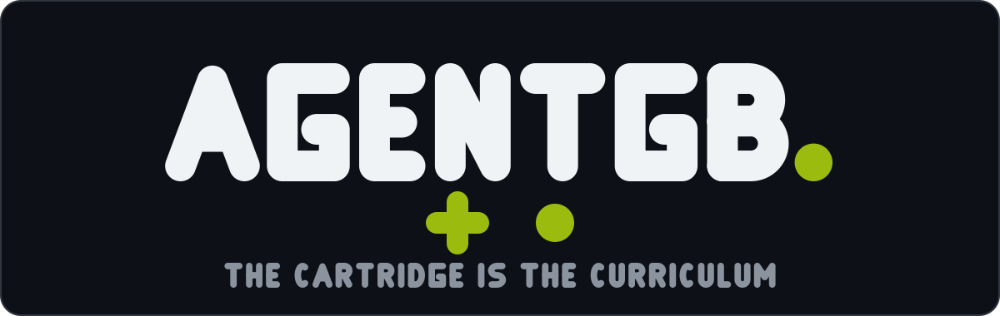
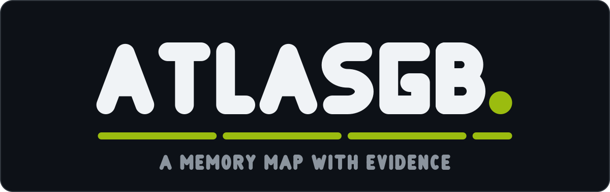
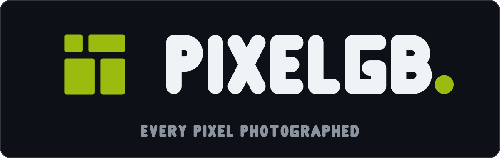
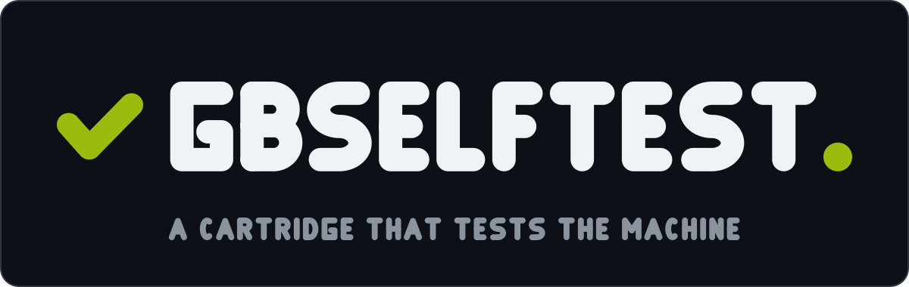
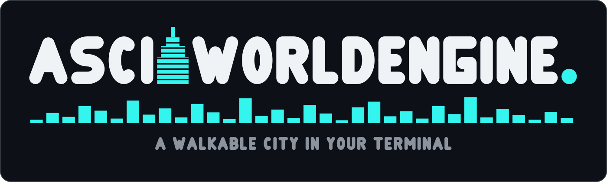
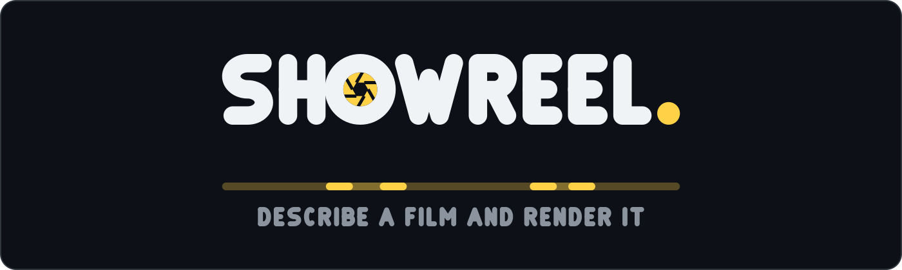

Project · Wordmark generator
Glyphsmith
Glyphsmith draws logos. Give it a word, a tagline, an accent colour and a shape for the project's own motif, and it hands back an SVG wordmark and a square icon — set in an alphabet that is not a font. Every letter is a hand-drawn stroked path on a 100-unit grid, so nothing it generates carries a third-party licence. It drew its own logo too, through the same public API any other project would use.
Counted straight from the repository as committed: glyphsmith coverage
for the alphabet split, python3 gallery/verify.py for the reproduction
check.

What it does
The grid
A centreline, not an outline
What a glyph file stores is not the letter's outline — it is the centreline, the path a pen travels, stroked at 26 units with round caps and round joins on a 100-unit cap grid. A stroke that wide sticks out 13 either side of its centreline, so every endpoint is inset by 13 from the edge it should touch.
'I': (26, ["M13 13 V87"]),
'H': (66, ["M13 13 V87", "M53 13 V87", "M13 50 H53"]),
'O': (64, ["M32 13 A19 37 0 1 0 32 87 A19 37 0 1 0 32 13"]),
Only five path commands appear anywhere: M, L,
H, V, A. No cubics. A letter that needs
a curve you cannot draw with a straight edge and an ellipse is not in this
alphabet's vocabulary.
The generator
Word, tagline, accent, motif
Every mark in the family is the same composition: a panel, the wordmark set in the house alphabet, an accent-coloured full stop closing it, and a tagline underneath. The one part that was ever project-specific is the motif — a shape that can stand in a letter's own place inside the word (TerminalGB's block cursor works this way, because a block cursor hides the glyph beneath it and that is what a terminal actually shows), run in a band under the word, or stand before it.
The layout is done in glyph units and converted once, which is what keeps a mark's proportions identical whether it is drawn 1200 units wide or 1400.
Mark(
word="ATLASGB",
tagline="A MEMORY MAP WITH EVIDENCE",
accent="dmg",
motif=RegionBar(),
scale=1.42, cap_y=84, tagline_y=306, band_y=262,
)The proof
It drew its own logo
brand/make.py imports glyphsmith from outside the
package and calls Mark exactly the way any other project would —
there is no hand-drawn artwork anywhere in this repository, including its own
front page.
- Its motif replaces the I in GLYPHSMITH with the letter's own construction: ghosted ink, a hairline centreline, and a ring on each terminal
- Under it runs the word's own metrics comb — a rule the width of the mark with a tick where each letter's advance ends. Every other band in the family stands for something outside the mark: RAM regions, scenes, a skyline. This one stands for the mark itself
- The icon is the letter G and the accent full stop, set by the same call that sets the wordmark
- A test asserts the wordmark's letters are the shared alphabet's letters, so the logo cannot quietly acquire private letterforms
The licence
No font, anywhere
No font is embedded, subset or traced in this repository, and none was consulted to draw the letters. Seven projects were each already carrying a private copy of this alphabet, unchanged, character for character — a licensed font at this point would have meant clearing the same licence eight times over, or admitting a font had quietly been informing marks that were supposed to be original artwork.
The code and the letterforms are Apache-2.0: fork them, extend them, ship
commercial marks drawn with them. The name Glyphsmith, and the seven project
names and wordmarks in the gallery below, are not licensed for reuse —
NOTICE draws that line.
What this alphabet has drawn
Seven marks existed before Glyphsmith did, each set by its own private copy of the same generator. All seven come out byte for byte identical to what their own repositories ship.







Where each motif sits
| Mark | Motif | Where it sits |
|---|---|---|
| TerminalGB | a solid block cursor | in the word, over the I |
| AsciiWorldEngine | a setback tower, and a skyline | in the word, over the second I, and beneath |
| ShowReel | a lens iris, and a timeline | in the word, over the O, and beneath |
| AtlasGB | four RAM regions as a bar | beneath the word |
| AgentGB | a D-pad and a button | beneath the word |
| GBSelfTest | a tick, at the letters' cap height | before the word |
| PixelGB | a sheet stitched from four pieces | before the word |
| Glyphsmith | a letter shown as its skeleton, and the word's own metrics | in the word, over the I, and beneath |
Three of these replace a letter rather than decorate the word. The idea is the same each time: the motif stands where a glyph would, on the glyph's own grid, because it is saying something the letter cannot.
Where the alphabet says no
A 26-unit stroke on a 100-unit cap is a quarter of the cap height. Three glyphs ran into that directly.
-
@is not in the alphabet at all. A round counter needs a radius over 13 to exist on this stroke; the ring around it needs to clear that by another 34, which puts the outer edge past 130 units of cap height — and there are 100. Drawn with a solid dot for the inner bowl instead, it reads as a target, not an at-sign. There is no cut of it that works at this stroke weight, so there is no@rather than a bad one. -
%gave up its rings. Two stacked rings with visible counters need 132 units of cap height between them; the counters are drawn as dots instead. A dotted per-cent reads as a per-cent. A pair of collapsed rings reads as two blobs. -
#and*fit, but only wide. The hash needs its verticals 40 units apart and its bars 34 apart, which makes it 104 units wide — wider than W. The asterisk needs its arms long enough that the tips actually separate, which makes it 76.
glyphsmith.MissingGlyph names the character and its code point when the
alphabet is asked for one it does not have.
Where these numbers come from
Everything here was run against the repository as committed 27 Aug 2026:
glyphsmith coverage for the 63/24/39 alphabet split,
python3 gallery/verify.py for the fourteen-file byte-for-byte
reproduction, and python3 -m pytest tests/ — 209 tests, including a
small SVG path sampler that measures where each glyph's ink actually sits rather than
trusting the stored string.
The generator and the alphabet are Apache-2.0 — free to fork, extend, and draw
commercial marks with. The name Glyphsmith, and the seven project names and
wordmarks shown above, are not licensed for reuse; NOTICE draws that
line in full.